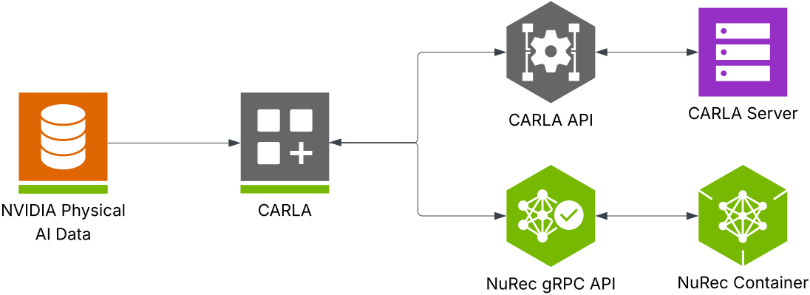

Use NVIDIA Neural Reconstruction with CARLA
NVIDIA Neural Reconstruction (NuRec) refers to the reconstruction and rendering models and services from NVIDIA that support the seamless ingestion of real-world data converted to a simulated environment suitable for training and testing Physical AI Agents, including robotics and autonomous driving systems.
With NuRec, developers can convert recorded camera and LIDAR data into 3D scenes. NuRec uses multiple AI networks to create interactive 3D test environments where developers can modify the scene and see how the world reacts. Developers can change scenarios, add synthetic objects, and apply randomization — such as a child following a bouncing ball into the road — making the initial scenarios even more challenging. With the NuRec gRPC API, developers can bring rendering services directly to their simulation platform of choice, for example, CARLA.
The NuRec gRPC API serves as a conduit of data and rendering between the CARLA replay and the NuRec container, where the scenes are reconstructed and rendered. You can load pre-trained scenes from the NVIDIA Physical AI Dataset for Autonomous Vehicles and define your scenes using the NuRec gRPC API in a python script (example_nurec_replay_save_images.py). The diagram below further illustrates the relationship between NuRec and CARLA.

When you run the replay script, CARLA loads the map and actors from the CARLA Server through the CARLA API. Rendering requests in the script return frames from the NuRec container through the NuRec gRPC API. Both APIs serve as a convenient interface to the CARLA and NuRec servers to deliver seamless updates to your simulation.
To use neural rendering in your CARLA simulations, use the NVIDIA Neural Reconstruction API and data from the NVIDIA Physical AI Dataset. Follow the instructions in this guide.
Before you begin
Prerequisites
Before you get started, make sure you have satisfied the following prerequisites:
- Ubuntu 22.04
- Recent CARLA Nightly build package installed
- CUDA 12.8 or higher
- Python 3.10 (Python 3.11 and up not currently supported)
Hugging face account
The installation downloads some sample datasets from Hugging Face. To complete the installation, you must have a Hugging Face account and create a token.
- If you don't already have a Hugging Face account, create one and log in.
- Agree to share your contact information to access the dataset:
- Find the dataset on the Hugging face website here
- Click on ✔ Agree and access repository
- Create a token with Read permissions
- Save the token in a safe place and enter it when prompted during the installation
Setup
In the following instructions, a CARLA_ROOT environment variable is used to locate the root directory of the CARLA package you have installed as a prerequisite. You should set this variable in your terminal or add the following line to your .bashrc profile:
export CARLA_ROOT=/path/to/carla/package
If you prefer not to set the CARLA_ROOT variable, replace ${CARLA_ROOT} with the path to the CARLA package root folder in the following instructions.
Prerequisite installation
The install script will attempt to install the following Ubuntu dependencies. To avoid installation problems, we recommend installing these dependency before running the NuRec install.
Docker: The NuRec tool uses Docker images, therefore you need Docker installed on your system. The following packages are recommended:
- docker-ce
- docker-ce-cli
- containered.io
- docker-buildx-plugin
- docker-compose-plugin
We recommend to pre-install these Docker requirements with the following commands. Add the Docker repository and install Docker with apt-get:
sudo install -m 0755 -d /etc/apt/keyrings
curl -fsSL https://download.docker.com/linux/ubuntu/gpg | sudo gpg \
--dearmor -o /etc/apt/keyrings/docker.gpg
sudo chmod a+r /etc/apt/keyrings/docker.gpg
sudo apt-get update
sudo apt-get install -y docker-ce docker-ce-cli \
containerd.io docker-buildx-plugin docker-compose-plugin
You may need to add your user to the Docker group and then log out and back in order for Docker to function properly. Try the following command to test your Docker installation:
docker run hello-world
If this command produces an error, run the following command:
sudo usermod -aG docker $USER
Then logout and log back in again or reboot.
NVIDIA container toolkit: The NuRec tool renders the neurally reconstructed scenes from within a running Docker container. The NVIDIA container toolkit is required to allow a Docker container to directly connect to the GPU hardware. Follow these instructions to install the container toolkit.
Create a virtual environment: To avoid conflicts between different Python or library versions, we recommend using a virtual environment to complete the installation. Run the following commands in the terminal to set up a virtual environment:
sudo apt install python3.10-venv
python3 -m venv vecarla
source vecarla/bin/activate # Activate the venv
Remember to activate the virtual environment in each new terminal session you open.
Note
Bear in mind that the virtual environment will be created in the folder where you run this command. In order to source the environment, you must be in the same directory where you ran this command. Once the venv is activated, you can then navigate to other directories as required. We recommend creating the venv in the ${CARLA_ROOT} directory or the ${CARLA_ROOT}/PythonAPI/examples/nurec directory.
Run the installer Script
To get started quickly and easily with the curated sample set from the NVIDIA PhysicalAI-Autonomous-Vehicles-NuRec dataset, navigate to the CARLA root directory on your machine and run the NuRec installation script:
source vecarla/bin/activate # Activate the venv
cd ${CARLA_ROOT}/PythonAPI/examples/nvidia/nurec/
./install_nurec.sh
You will be asked to enter your HuggingFace token on the command line, ensure to have it at hand. The script installs the needed prerequisites and Python packages, sets the required environment variables for the NuRec container and downloads the curated sample dataset from HuggingFace.
The script will install the following Python packages:
- pygame
- numpy
- scipy
- grpc
- carla
- nvidia-nvimgcodec-cu12
Note
You may need to log your Linux user out and log back in again in order for the NuRec tool to work after installation.
Example datasets
The NuRec tool can make use of a large collection of pre-trained neural reconstruction datasets, the installer will download the collection from the NVIDIA PhysicalAI-Autonomous-Vehicles-NuRec dataset on HuggingFace. The dataset is 1.52 terabytes in size so you must ensure that you have adequate hard drive space. The script will download the dataset into a folder named PhysicalAI-Autonomous-Vehicles-NuRec in the ${CARLA_ROOT}/PythonAPI/examples/nvidia/nurec/ directory.
Note
If you have previously run the installation script and encountered a problem, you may need to move or delete the PhysicalAI-Autonomous-Vehicles-NuRec folder. The script will assume the data is previously downloaded if this folder already exists.
Python environment
If you are using a specific Python environment, you should install the required Python packages by running the following command:
source vecarla/bin/activate # Activate the venv
python3 -m pip install -r ${CARLA_ROOT}/PythonAPI/carla/requirements.txt
Set up your environment variables
The replay script uses two environment variables — NUREC_IMAGE and CUDA_VISIBLE_DEVICES. If you are customizing your installation, you may need to change these:
-
NUREC_IMAGEis required and must be set to the full path of the NuRec image in the CARLA repository. Run the following command to set it:export NUREC_IMAGE="docker.io/carlasimulator/nvidia-nurec-grpc:0.2.0" -
CUDA_VISIBLE_DEVICESis optional and you can use it to designate the GPU that runs the replays. If you don't set it to a specific GPU, the script defaults to "0" and runs on GPU 0. If you've already set this environment variable, the script inherits whatever has previously been set.
Run the CARLA NuRec Replays
1. Launch the CARLA Server: From the directory where your CARLA package exists, run the following command:
cd ${CARLA_ROOT}
./CarlaUE4.sh
2. Replay a NuRec Scenario: Once the CARLA server is running, open a new terminal window and navigate to the directory where your CARLA package exists, then replay a NuRec scenario with the example_nurec_replay_save_images.py script. We recommend using the NuRec version 25.07 datasets, which you will find in the ${CARLA_ROOT}/PythonAPI/examples/nvidia/nurec/PhysicalAI-Autonomous-Vehicles-NuRec/sample_set/25.07_release directory. Choose one of the example USD datasets from the PhysicalAI-Autonomous-Vehicles-NuRec directory to experiment with and copy the path and filename for the following command. To run the example, insert the path and filename of the example you chose into the following command and execute it:
source vecarla/bin/activate # Omit if you are not using a venv
cd ${CARLA_ROOT}/PythonAPI/examples/nvidia/nurec/
python3 example_nurec_replay_save_images.py --usdz-filename <path_to_example>/<usd_filename>.usdz #--move-spectator --saveimages
-
Additional arguments:
--move-spectator: the CARLA spectator will follow the Ego vehicle to assist in debugging and inspection--saveimages: images rendered by NuRec cameras and CARLA cameras will be saved in a default directory nameddatacreated in the execution location of the script--output-dir: specify the directory for the output images when using the--saveimagesflag
-
Multi-camera replay: The example script provides a complete, multi-view visualization system, ideal for understanding how to integrate various camera types and create comprehensive monitoring setups. When you run it, it replays simulations with multiple NuRec cameras (front, left cross, right cross) in different camera positions in a Pygame display grid. It also supports additional perspectives pulled from standard CARLA cameras attached to the ego vehicle and multiple camera feeds with different framerates and resolutions.
-
Custom camera parameters: If you want to replicate specific camera hardware or experiment with different camera configurations, you can specify the camera configuration in the YAML configuration file. You will find the camera configurations in the
carla_example_camera_config.ymlfile in the same directory as the example scripts. Modify this file and re-launch the example script above. You can change the target YAML file on line 173 of theexample_nurec_replay_save_images.pyscript:
# Add cameras using the new flexible add_camera method
with open("your_camera_config.yaml", "r") as f:
camera_configs = yaml.safe_load(f)
The advanced camera configurations available include custom F-Theta configuration, precise intrinsic parameter specification (principal point, distortion polynomials), custom positioning through camera transform matrices, rolling shutter simulation, and real-time visualization using Pygame.
Command line parameters
The following table explains the available command-line parameters for the scripts:
| Parameter | Long Form | Default | Description |
|---|---|---|---|
| -h | --host | 127.0.0.1 | IP address of the CARLA host server |
| -p | --port | 2000 | TCP port for the CARLA server |
| -u | --usdz-filename | (required) | Path to the USDZ file containing the NuRec scenario |
| -np | --nurec-port | 46435 | TCP port for NuRec-CARLA connection |
| --saveimages | Inactive | Save the images generated by NuRec or CARLA cameras | |
| --output-dir | data |
Choose directory for --saveimages |
|
| --move-spectator | False | Move the spectator camera to follow the ego vehicle |